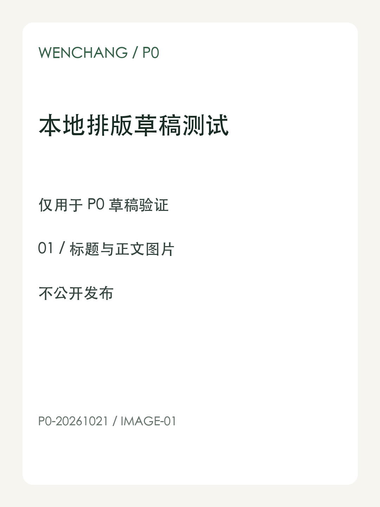
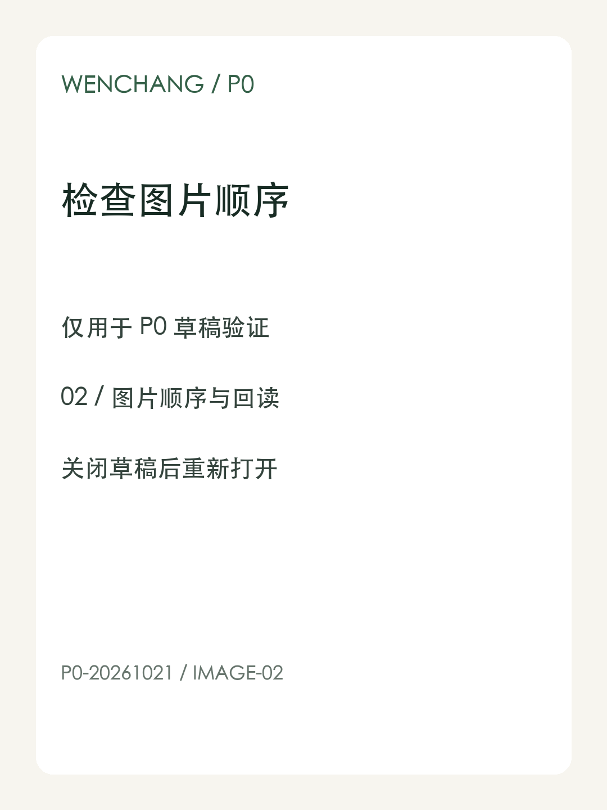

本文是文昌本地内容工作流的合成排版样稿，仅用于平台草稿验证，不公开发布。
测试标记：P0-20261021-BEGIN。中文标点：逗号，句号。引号“保留”；编号 A-01。
这是加粗内容，用于检查编辑器是否保留必要的文本格式。

这段引用只用于排版验证，不代表外部事实或效果承诺。
| 检查项 | 预期 |
|---|---|
| 图片顺序 | 01 在前，02 在后 |
| 草稿回读 | 标题、文字与图片完整 |
status = draft_test_only
publish = false示例链接：Example Domain。

测试标记：P0-20261021-END。本文到此结束。